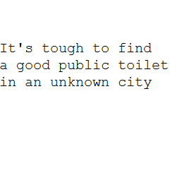
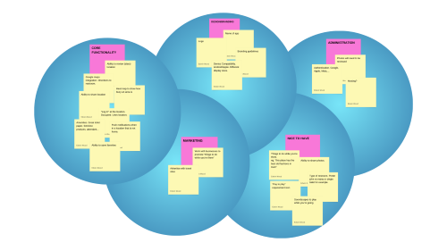
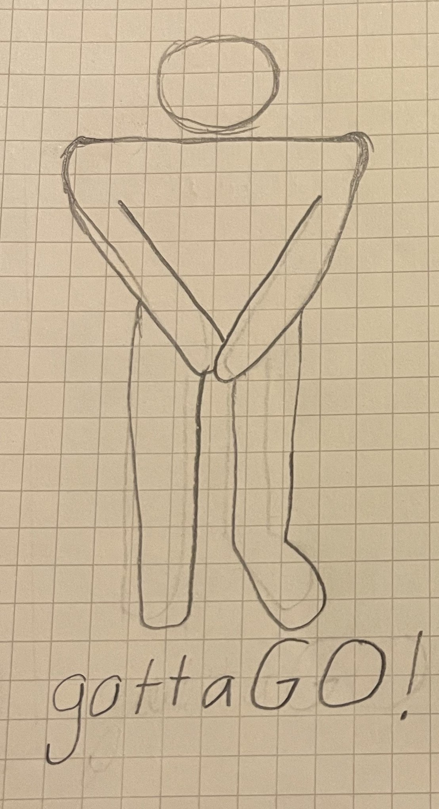
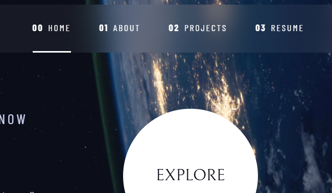
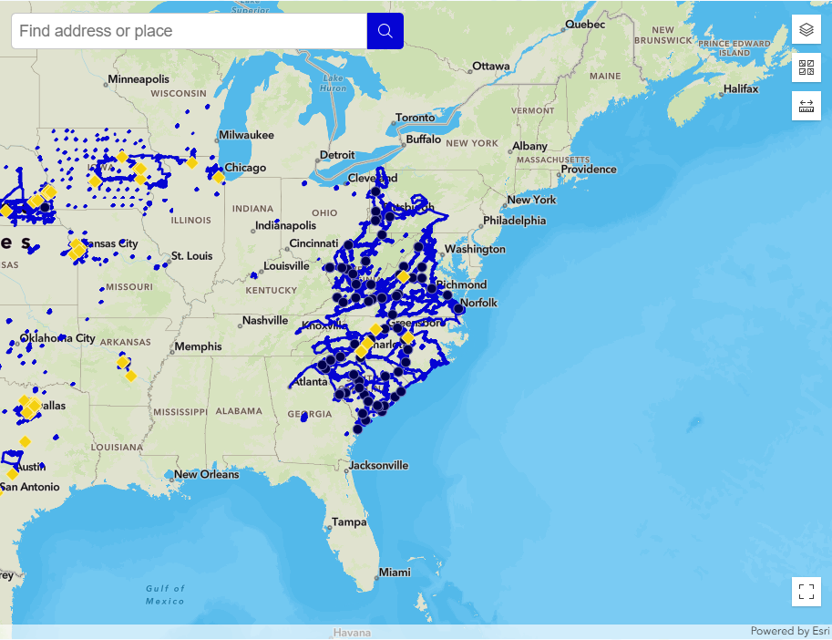
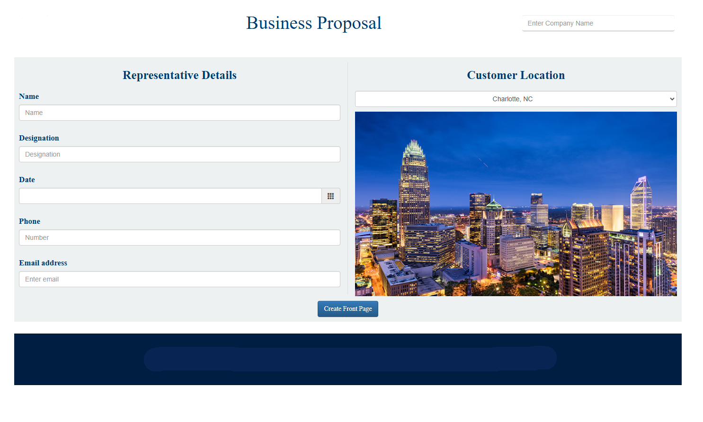
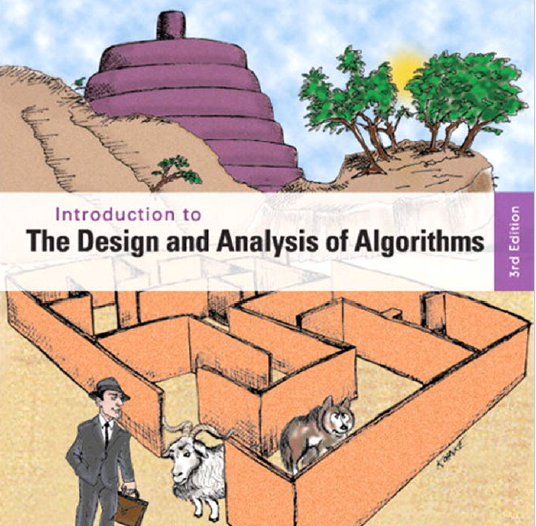

Hello, my name is Edwin Wood and I am a successful IT leader with more than a decade of consistent contributions in software development. I have extensive experience improving business processes and products by partnering with cross-organizational business owners. I also have a proven track record of building motivated engineering teams and managing complex projects. I am a strong collaborative leader adept in delivering a product as a team. My best qualities are reaching out to people, working out strategies together, and developing positive relationships.
Leadership: Led over 20 IT professionals fostering growth, innovation, and efficiency in the SDLC
Technical: Object Oriented Programming (C#, Java, JS, C++...), Automation, API Development, CI/CD, Identity and Access Mgmt...
Resume: Download here

It's tough to find a good public toilet in an unknown city

Affinity Diagram to brainstorm features, design, marketing, and administration of NEW APP.

Initial sketches of gottaGO app

Sketches of different screens with actions listed above them

Website portfolio for submission with job applications

A web app built on top of ESRI which can be integrated with modern CRMs

App to customize and compile templated pdfs to produce beautiful product proposals

Different coding projects created throughout the Fall '24 semester